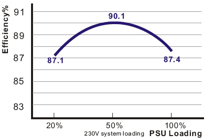

Cougar S 700 maitinimo blokas
Kompanija Cougar priklauso “HEC/COMPUCASE” kompanijų grupei, ji specializuojasi maitinimo blokų bei korpusų gamyboje. Kol kas produkcijos asortimentas nėra itin platus, tačiau iš pirmo žvilgsnio jų siūlomi gaminiai atrodo tikrai kokybiškai. Cougar pristato du korpusų modelius bei tris maitinimo blokų serijas: Power, CM ir S. Šiandieną apžvelgsime S Series 700W maitinimo bloką pavadinimu Cougar S 700 - tai galingiausias S serijos maitinimo blokas, komplektuojamas su 140mm ventiliatoriumi, Modular tipo laidais bei atitinkantis 80 Plus Silver reikalavimus. Žvilgsnis iš arčiau Cougar S 700 maitinimo bloko pakuotės priekinėje dalyje matome kompanijos logotipą bei sertifikavimo ženkliukus: šis matinimo blokas turi SLI Ready ir CrossFire X sertifikatus bei efektyvumą įrodantį 80 Plus Silver sertifikavimo žymėjimą. Kitoje pakuotės pusėje nurodyti matinimo bloko ypatumai, jungčių skaičius, efektyvumas bei galios charakteristikos.
Žvilgsnis iš arčiau
Cougar S 700 maitinimo bloko pakuotės priekinėje dalyje matome kompanijos logotipą bei sertifikavimo ženkliukus: šis matinimo blokas turi SLI Ready ir CrossFire X sertifikatus bei efektyvumą įrodantį 80 Plus Silver sertifikavimo žymėjimą. Kitoje pakuotės pusėje nurodyti matinimo bloko ypatumai, jungčių skaičius, efektyvumas bei galios charakteristikos.
Pakuotės viduje randame:
- Cougar S 700 maitinimo bloką
- Power laidą
- 3 vnt. surišimo dirželių
- Manual vartotojo knygelę
- 4 tvirtinimo varžtus
- logotipą - lipduką
- PSU modular laidus: 2 vnt. SATA, 1 vnt. Floppy, 2 vnt. Molex, 2 vnt. PCI-E
Cougar S 700 maitinimo blokas išsiskiria iš kitų gaminių savo dizainu ir savitu stiliumi: įrėmintas ventiliatorius, korio formos apsauginės grotelės, specifinis maitinimo bloko korpuso nudažymas bei apipavidalinimas - visa tai atrodo tikrai šauniai. Maitinimo blokas pritaikytas jį nudoti tiek ventiliatoriusmi aukštyn, tiek žemyn, todėl šone esantys logotipai nebus aukštyn kojomis.
Galinėje ir priekinėje S 700 sienelėse padarytos kiaurymės oro vintiliacijai. Priekinėje sienelėje, iš kurios išeina maitinimo laidai, įrengtos įvairios jungtys Modular tipo laidams. Maitinimo blogo specifikacijos nurodomos ne ant bloko šoninės dalies, o ant prieš ventiliatorių esančios sienelės. Galinėje Cougar S 700 maitinimo bloko dalis nudažyta oranžine spalva, ant jos išdėstyta Power laido jungtis bei On/Off mygtukas su žaliu apšvietimu. Išjungums mygtuką išsijungia ir jo apšvietimas.


Specifikacijos
- Modelis:Cougar S 700
- Tipas: ATX12V ir EPS 12V
- Išmatavimai: 180(ilgis) x 150(plotis) x 86(aukštis) mm
- Input Frequency Range: 50-60Hz
- Efficiency: 80 Plus Silver
- Protection: OCP, SCP, OVP, UVP,OPP
- Ventiliatorius: 140mm
- Certifications: AMD Game Ready, SLI Ready, CrossFire X Certified, 80 Plus Silver
- Connector: M/B 20+4 Pin Connector x 1; CPU 4+4 Pin x 1; PCI-E 6 Pin x 2; PCI-E 8(6+2) Pin x 2; 4 Pin Molex x 5; SATA x 8; 4 Pin Floppy x 1
- Garantija: 3 metai
Cougar S 700 maitinimo blokas pasižymi geru efektyvumu - jis atitinka 80 Plus Silver reikalavimus. Gamintojo nurodomoje diagramoje pavaizduotas maitinimo blogo efektyvumas priklausomai nuo bloko apkrovos. Maksimalus maitinimo bloko efektyvumas siekia 90.1 procentus. Esant maksimaliam sistemos apkrovimui efektyvumas kiek sumažėja ir siekia 87.4 procentus. Naudojami trys 12V Rails: 12V1, 12V3 ir 12V4 leidžia optimizuoti galią: kuomet nenaudojamas 12V kanalas, galia perskirstoma ir nukreipiama į kitus 12V Rails.

Nemažą dėmesį perkant PSU reikia atkreipti į jo komplektacijoje esančius laidus. Šis maitinimo blokas turi dviejų tipų laidus: "pastoviuosius" ir Modular tipo - atjungiamus laidus. Modular tipo laidai patogūs tuo, kad visuomet galima pajungti vartotojui reikiamą laidų kiekį ir taip sutaupyti vietos korpuse. Cougar S 700 maitinimo blokas turi M/B 20+4 Pin Connector x 1; CPU 4+4 Pin x 1; PCI-E 6 Pin x 1; PCI-E 8(6+2) Pin x 1 "pastoviuosius" laidus - jie negali būti atjungti nuo maitinimo bloko. Taipogi yra PCI-E 6 Pin x 1; PCI-E 8(6+2) Pin x 1; 4 Pin Molex x 5; SATA x 8; 4 Pin Floppy x 1 Modular tipo laidai, kuriuos galima prijungti ar atjungti pasirinktinai.
Visi Cougar S 700 laidai yra įvilkti į margą sleeving tinklelį, galuose tinklelis užspaustas dirželiais bei apvilktas termokembrikais - atlikimo kokybė ne pati geriausia, nes laidai įvilkti ne iki galo. Visi maitinimo kištukai juodos spalvos, o Molex kištukai turi specialias, atjungimą palengvinančias, auseles - paspaudus šias auseles, kištukas lengviau išimamas iš jungties. PCI-E standarto laidai turi raudonus kištukus, todėl nesupainiosite pajungdami laidus į PSU, nes bloko sienelėje yra raudonos ir juodos spalvos pajungimo lizdai. Laidų komplekte išties nemažai, kištukai kokybiški ir neturi sulankstytų Molex pin, kas dažnai pasitaiko žemos kokybės maitinimo blokuose. Taipogi svarbus dalykas - laidų ilgis. Cougar S 700 laidai nėra trumpi, todėl surenkant sistemą keblumų kilti neturėtų. Žemiau pateikiu visų komplekte esančių laidų foto.
Atidarome Cougar S 700 maitinimo bloko dangtį norėdami pamatyti kas PSU viduje. Čia sumontuoti nedideli, juodi radiatoriai bei Japoniški kondensatoriai, kurie gali veikti 105 ⁰C temperatūroje. Bloke sumontuotas 140mm sleeve bearing ventiliatorius, kurio apsukos reguliuojamos priklausoma nuo PSU apkrovos. Ventiliatoriaus dydis leido sumažinti jo apsukas, tuo pačiu gaunant mažesnį triukšmo lygį. Matinimo blokas turi kelias apsaugas: OCP, SCP, OVP, UVP,OPP. Tai apsaugos nuo įtampų kritimų 12V linijose, trumpo jungimo, per didelio sistemos galios poreikio. Blokas pagamintas naudojant DC to DC technologiją, kuri turėtų pagerinti jo našumą bei efektyvumą (plačiau apie šią technologiją galite pasiskaityti gamintojo puslapyje).
Rezultatai
Testavimo sistema:
- CPU Cooler - Noctua NH-D14
- Case - Fractal Design Define R2
- Mainboard - Asus M2N-E nForce570 Ultra
- CPU - AMD ATHLON 64 X2 Dual-Core 5000+ AM2 (65W)
- RAM - Corsair DDR2 KIT 2X1G 800MHZ TWIN2X2048-6400 G
- HDD - SEA BARRACUDA 160GB 7200rpm
- GPU - inno3D GF8800GT 512MB GDDR3 RAMDAC 400MHZ Core 600MHz Memory 1800MHz
- PSU - Cougar S 700
- Case Fans - Fractal Design Silent Series 120mm (1000rpm, 65.0 m³/h)
Montuojant Cougar S 700 maitinimo bloką į korpusą nesklandumų nekilo. Visi PSU laidai pakankamo ilgio, todėl be problemų pasiekė visus įreninius. Kokybiški kištukai palengvino visų įrenginių matinimo pajungimą. Komplekte esantys laidų surišimo dirželiai pasitarnavo tvarkant "pastoviuosius" laidus, kurie liko nepajungti. Patiko PSU aušinimas: 140mm ventiliatorius veikė labai tyliai, idle rėžimu jis buvo vos girdimas. O štai ir surinktos sistemos foto:
Pateikiu Cougar S 700 maitinimo bloko įtampų dydžius, užfiksuotus PC Probe II V1.04.74 programa. Stebint šį maitinimo bloką PC Probe II V1.04.74 programa, per valandą nebuvo užfiksuotas nė vienas didesnis nei 2 % įtampos šuolis.
Norėdami pamatyti išsamesnius testus, galite pažiūrėti jonnyguru.com atliktus Cougar S 700 testus.
Išvados
Pliusai:
- kokybiškas
- efektyvus
- gražaus dizaino
- ilgi, Modular tipo laidai
- tylus
- 140mm ventiliatorius
Minusai:
- kiek per trumpi sleeving'ai
 Cougar S 700 maitinimo blokas pasižymi originaliu dizainu, geru efektyvumu bei tyliu veikimu. Nestandartinis maitinimo bloko apipavidalinimas atrodo šauniai. 140mm ventiliatorius veikia tyliai: neapkrovus PSU jis - vos girdimas. Ypač patiko bloko rėmas, kadangi jis yra standesnis nei daugelio kitų maitinimo blokų. Gera nudažymo kokybė taipogi nemažas S 700 bloko privalumas: PSU nepraras estetinio vaizdo jį montuojant ir kaskart prisukant, nes storas dažų sluoksnis nesilups ir neapsidaužys. Kalbant apie blogasias S 700 savybes galėčiau prikibti tik prie sleeving'o - jis kiek per trumpas, todėl laidų galai lieka neįvilkti. Šis maitinimo blokas parduodamas už patrauklią kainą, todėl gaunamas geras kokybės/kainos santykis. Susumavęs visus pliusus ir minusus, Cougar S 700 maitinimo blokui suteikiu "modding.lt renkasi" apdovanojimą.
Cougar S 700 maitinimo blokas pasižymi originaliu dizainu, geru efektyvumu bei tyliu veikimu. Nestandartinis maitinimo bloko apipavidalinimas atrodo šauniai. 140mm ventiliatorius veikia tyliai: neapkrovus PSU jis - vos girdimas. Ypač patiko bloko rėmas, kadangi jis yra standesnis nei daugelio kitų maitinimo blokų. Gera nudažymo kokybė taipogi nemažas S 700 bloko privalumas: PSU nepraras estetinio vaizdo jį montuojant ir kaskart prisukant, nes storas dažų sluoksnis nesilups ir neapsidaužys. Kalbant apie blogasias S 700 savybes galėčiau prikibti tik prie sleeving'o - jis kiek per trumpas, todėl laidų galai lieka neįvilkti. Šis maitinimo blokas parduodamas už patrauklią kainą, todėl gaunamas geras kokybės/kainos santykis. Susumavęs visus pliusus ir minusus, Cougar S 700 maitinimo blokui suteikiu "modding.lt renkasi" apdovanojimą.
Cougar S 700 maitinimo blokas prieinamas Lietuvoje šiose parduotuvėse: pigu.lt, itbank.lt, pc.lt, skytech.lt . Gaminio kaina siekia 330Lt.
Modding.lt komanda dėkoja Christian Verfürth iš www.cougar-world.com už apžvalgai suteiktą produktą.
Jei norėsite pakomentuoti mano straipsnį arba pareikšti savo nuomonę, apsilankykite Modding.lt forume.


{kind=link}
{kind=link}
{kind=link}
{kind=link}
{kind=link}
{kind=link}
{kind=link}
{kind=link}
{kind=link}
{kind=link}
{kind=link}
{kind=link}
{kind=link}
{kind=link}
{kind=link}
{kind=link}
{kind=link}
{kind=link}